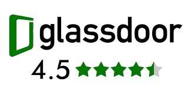

An analysis of Mr Fisayo Fosudo YouTube Channel. He is a visual storyteller, finance and technology video producer with over 400,000 subscribers. Video data was obtained via YouTube API and analyzed using Python libraries such as Pandas, NumPy, Seaborn, Matplotlib and NLTK.

I answered some leetcode SQL questions with varying SQL methods such as Joins, Select, Subqueries, Sorting and Grouping and many more.
I answered some leetcode SQL questions with varying SQL methods such as Joins, Select, Subqueries, Aggregation, Sorting and Grouping and many more.

This is a Glassdoor review analysis to review different companies' overall achievement across different locations. Dataset is from www.kaggle.com

This contains Airline Passenger Satisfaction analysis using Python libraries. It also contains visualizations that further aid the understanding of the dataset. Dataset is from Kaggle.com.
Student mental health Dataset analysis using Python. Dataset is from www.kaggle.com.

Data Exploration of World's Covid19 Dataset in SQL.

In this project,Nashville housing data was transformed in SQL Server to make it more usuable for analysis.
Data Exploration of LEGO Rebrickable Dataset using SQL queries.
This is a dashboard showing information about a company's attrition data across different parameters such as age, gender, Education etc.
Data is extracted from DHIS2 via API and loaded into Power BI, where Power Query is used for data cleaning, manipulation, and restructuring. The dashboard provides a range of analyses, including indicator summary report, trend analysis, concurrence analysis between indicators, an accountability matrix, and target achievement monitoring, among other features.
Beyond the project's striking visuals, its most compelling feature was the automation of recurring processes. Specifically, it addressed the dynamic recalculations required by period changes (e.g., quarterly shifts) and implemented functions that adapt their behavior based on specific conditions.
This analyzes tuberculosis data for monitoring and evaluation. Data is extracted from APPR database via connector and loaded into Power BI, where Power Query is used for data cleaning, manipulation, and restructuring. The dashboard provides a range of analyses, including different indicator summary report, trend analysis, among other features.

This analyzes different HIV indicators across different health facilities and locations.

This is a weekly preformance monitoring tool for HIV Treatment Indicator across different health facilities and locations.